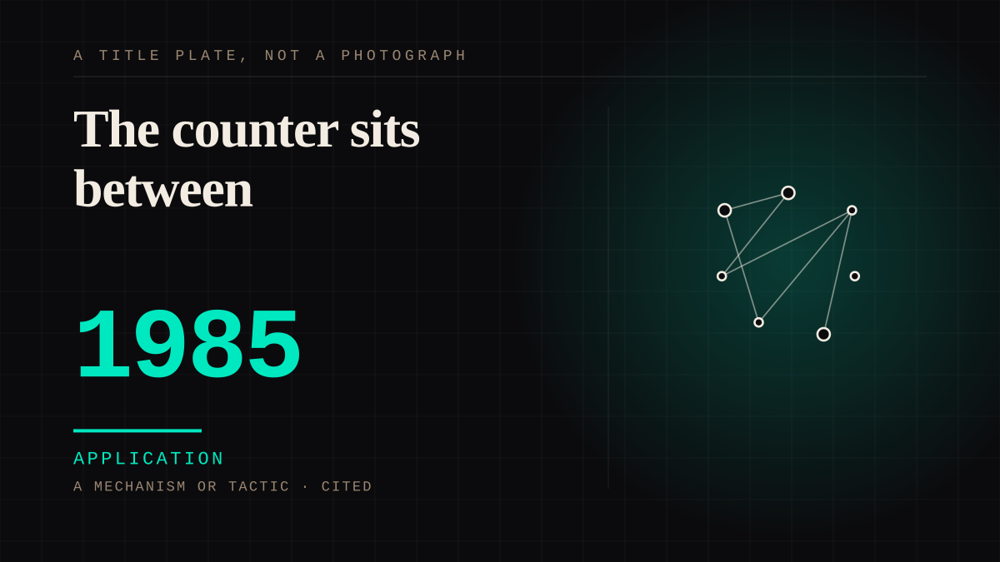

A mechanism or tactic · 1985 · Retail
The counter sits between
The person who knows you is also the person who profits from you, and is paid to be there, and goes home at six. The relationship has an employer.

The distinction nobody makes: a parasocial bond feels the same whether the other end is a person, a corporation, a platform or a state. The counter sits between the two, and that middle is where the ethics live. It is also why the video store clerk is the right mascot for a site about this.
Application. One-sided attachment put to work on purpose. Creator economies, community, fandom as infrastructure, and the things that genuinely help people. Not automatically good - a tool with an obvious use is a tool that will also get a bad one.
Manipulation. One-sided attachment engineered for somebody else's benefit. Paid intimacy, parasocial persuasion, sasaeng, grief extraction, the streak. The lane that pays the bills and the lane that causes the most harm, frequently at the same time.
Where it sits
1950 1950-1999 · 1985 1999
Connected · 3 out, 7 in
Reported as a story
It sits in